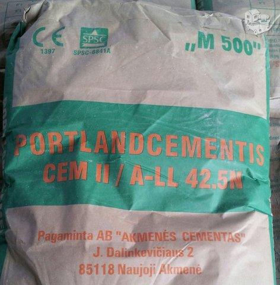
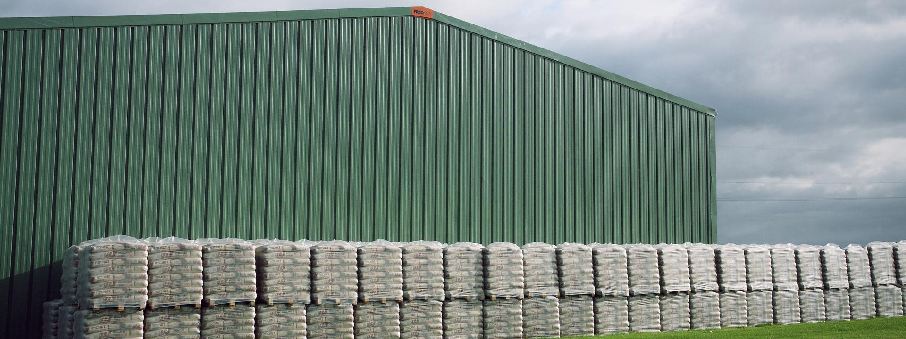

Cementas Internetu pigiau Žema kaina | b-a.eu

Kalba (language)
Pristatymas (shipping to)
Belarus Germany Denmark Estonia Spain France United Kingdom Ireland Italy Lietuva Latvia Norway Poland Russia Sweden Ukraine KuponaiPrekių katalogas
Baldai ir interjeras Statybinės medžiagos Buitinė technika Namai ir buitis Elektronika namams Metalai Įranga ir įrenginiai Santechnika Prekės vaikams Elektros prekės Laisvalaikio ir sporto prekės Prekės civiliams, kariams, medžiotojams Zoo prekės gyvūnams Medicina, sveikata Sodo daržo prekės Sekso prekės Kvepalai ir kosmetika Apranga, avalynė ir aksesuarai Dovanos, suvenyrai, pramogos Auto-Moto Išmanūs namai Žiūrėti visą prekių katalogą Prisijunkitearba registruokitės Apie b-a.eu Kontaktai D.U.K Kaip pirkti
EUR /
/
Pristatymas: Lietuva
Kalba (language) Lietuvių Latviešu English Pусский Pristatymas (shipping to) Belarus Germany Denmark Estonia Spain France United Kingdom Ireland Italy Lietuva Latvia Norway Poland Russia Sweden Ukraine Prekių krepšelis: 0 Parfumerija Moterims Kvepalai moterims Chanel Christian Dior Versace Hugo Boss Guerlain Lacoste Lancome Gucci Escada Giorgio Armani Serge Lutens Lanvin Moschino Chloe Lady Gaga Mexx Revlon Kenzo Calvin Klein Kosmetikos rinkiniai Kosmetika veidui Makiažo pagrindas Veido pudra Skaistalai Maskuojamos priemonės Kosmetika akims Tušai Šešėliai Akių pieštukai ir kontūrai Kosmetika lūpoms Lūpų dažai Blizgesiai Pieštukai lūpoms Kosmetika nagams Negyvosios jūros produktai Vyrams Kvepalai vyrams Chanel Christian Dior Versace Hugo Boss Lacoste Lancome Gucci Giorgio Armani Lanvin Moschino Mexx Kenzo Calvin Klein Visi kvepalai vyrams Skutimosi priemonės Losjonai, balzamai Skutimosi želė Skutimosi putos Higienos priemonės Šampūnai Dušo želė Dezodorantai/antiperspirantai Burnos higiena Muilas Kojų priežiūrai Naujas Kremai nuo saulės Dekoratyvinė kosmetika Kosmetikos rinkiniai Makeup Trading Elizabeth Arden Estee Lauder Clinique Visi rinkiniai Akių šešėliai Christian Dior Artdeco Dermacol Rimmel London Visi šešėliai akims Akių pieštukai ir kontūrai Lancome Christian Dior Rimmel London Visi akių pieštukai Akių tušai Chanel Lancome Christian Dior L´Oreal Paris Clinique Maybelline Rimmel London Visi akių tušai Makiažo pagrindas Revlon Lancome BOURJOIS Paris Christian Dior Visi makiažo pagrindai Veido pudra Clinique Lancome Visos pudros Skaistalai veidui Rimmel London Dermacol Lūpų dažai Christian Dior Max Factor Visi lūpų dažai Lūpų pieštukai Lūpų blizgesiai Dolce & Gabbana Lancome Visi blizgesiai lūpoms Maskuojamosios priemonės veidui Kosmetika nagams Dermacol Sally Hansen Priežiūra ir higiena Veido priežiūra Kremai veidui Kaukės ir serumai Paakių priežiūra Veido valikliai Asmens higiena Dezodorantai ir antiperspirantai Naujas Depiliacija Burnos higiena Intymi higiena Muilas Vonios druskos, aliejai Plaukų priežiūra Šampūnai Plaukų stiprikliai Plaukų modeliavimui Plaukų kaukės Kondicionieriai ir balzamai Plaukų dažai Viso kūno priežiūra Kūno kremai, losjonai Kūną stangrinančios priemonės Kojų priežiūra Rankų priežiūra Kūno šveitikliai Kremai ir losijonai nuo saulės nudegimų, netolygau įdegio Aromatiniai eteriniai aliejai Negyvosios jūros produktai Negyvoji jūra kūnui Kūno losjonai, kremai, sviestai Dušo želė, šveitikliai Papildomos, spec. priemonės Negyvoji jūra plaukams Plaukų balzamai, kaukės Negyvosios jūros šampūnai Negyvoji jūra veidui Paakių zonai Veido kremai, kaukės Veido valymui Papildomos negyvosios jūros priemonės Baldai Svetainės baldai Sekcijos Sofos, sofos-lovos Minkšti kampai Foteliai ir pufai Svetainės komodos Svetainės staliukai TV staliukai Lentynos Miegamojo baldai Miegamojo lovos Čiužiniai Miegamojo spintos Miegamojo baldų kolekcijos Virtuvės baldai Virtuviniai komplektai Virtuvinės spintelės Virtuviniai stalai Virtuviniai stalviršiai Virtuvės baldų priedai Vonios baldai Vonios baldų kolekcijos Vonios spintelės Sisteminiai baldai Šiuolaikiniai sisteminiai baldai Klasikiniai sisteminiai baldai Jaunuolio baldai Jaunuolio baldų kolekcijos Jaunuolio baldų komplektai Jaunuolio kėdės Valgomojo baldai Valgomojo stalai Valgomojo kėdės Prieškambario baldai Prieškambario kolekcijos Prieškambario komplektai Prieškambario spintos Batų dėžės Kabyklos Dekoratyviniai aksesuarai Paveikslai Baldai vaikams Vaikiškos lovos Spintos vaikams Stalai vaikams Kėdės vaikams Lentynos vaikams Kabyklos vaikams Lauko baldai Lauko stalai Lauko kėdės Įvairūs lauko baldai Lauko baldų komplektai Medžio masyvo baldai Mediniai virtuvės baldai Mediniai miegamojo baldai Mediniai valgomojo baldai Mediniai prieškambario baldai Mediniai staliukai Kiti mediniai baldai Biuro baldai Biuro baldų kolekcijos Biuro kėdės Baro ir restorano baldai Baro, restorano stalai Baro, restorano kėdės Statyboms Statybiniai blokeliai ir plytos Akyto betono blokeliai Silikatiniai blokeliai Silikatinės plytos Keramzitiniai blokeliai Keraminiai blokeliai Keraminės plytos Klinkerinės plytos Betono blokeliai Pamatiniai blokeliai Statybinės sąramos Stogų ir sienų dangos Beasbestinis šiferis Bituminės čerpelės Bituminiai lakštai PVC lakštai Prilydomos dangos Betoninės čerpės Keraminės čerpės Profiluota skarda Cedral apkala Sandwich plokštės Komplektavimo detalės Statybiniai mišiniai Cementas Mūro mišiniai Statybiniai klijai Gipsas Glaistas Išlyginamieji mišiniai Tinko mišiniai Cheminiai priedai Šilumos izoliacija Akmens vata Stiklo mineralinė vata Putų polistirenas Ekonominis polistirolas Termoizoliacinės plokštės Šilumos izoliacinis tinkas Kita šilumos izoliacija Statybinės plokštės Gipso kartonas (GKP) Orientuotų skiedrų plokštės (OSB) Fanera Cemento drožlių plokštės (CDP) Medžio drožlių plokštės (MDP) Medžio plaušo plokštės (MPP) Tvoros Tvorų segmentai Stulpai tvoroms Vartai Tvorų aksesuarai Tinklai tvoroms Skaldytų blokelių tvoros Betoninės tvoros Skardinės tvoros Kaminų sistemos Schiedel kaminai Fibo kaminai Kerapor kaminai Aplinkos tvarkymo elementai Grindinio trinkelės Klinkerio trinkelės Šaligatvio plytelės Kelio ir vejos bordiūrai Šulinių žiedai Dekoratyviniai gaminiai Apdailos medžiagos Apdailos plytelės Grindų apdailos medžiagos Sienų apdailos medžiagos Lubų apdailos medžiagos Apdailos sujungimo profiliai Dažai ir glaistai Emulsiniai dažai Lakai Akriliniai dažai Aliejiniai dažai Grindų dažai Emaliniai dažai Aerozoliniai dažai Dažymo įrankiai Gruntai Glaistai Rūdžių surišėjai, modifikatoriai Medžio tvirtinimo elementai Vinys Medsraigčiai, smeigės Kabliai (pusiaukilpiniai, įsukami) ir kilpos Sraigtai Din 7981, cinkuoti Sraigtai Din 571, cinkuoti Metalo tvirtinimo elementai Varžtai Veržlės Poveržlės Sraigtai Kniedės Vielokaiščiai Skiedikliai ir valikliai Acetonas Nefrazas Nitroskiedikliai Terpentinas Vaitspiritas Žibalas Skiedinio dėmių valikliai Specialios paskirties valikliai Tinklai, lynai, vielos, grandinės Statybiniai tinklai Vieliniai lynai, vielos Grandinės Plieninių lynų ir grandinių tvirtinimo elementai Tvirtinimo elementai Metalo profiliai Kaiščiai GKP tvirtinimo elementai Šilumos izoliacinių medžiagų tvirtinimo elementai Stogų, sienų tvirtinimo elementai Langai, durys, palangės, laiptai Stoglangiai Vidaus ir lauko durys Laiptai Durų stogeliai Palangės Plėvelės stogams ir sienoms Antikondensacinė plėvelė Difuzinė plėvelė Garo izoliacinė plėvelė Priešvėjinė plėvelė Apsauginės medžiagos Statybinė mediena Hidroizoliacija, hermetikai, impregnantai Poliuretaninės putos Pistoletai hermetikams Putų pistoletų valikliai Hidroizoliacinės medžiagos Impregnantai Silikoniniai hermetikai Akriliniai hermetikai Ugniai atsparūs hermetikai Bituminis siūlių užpilas Vandens suvedimo sistemos Lietvamzdžiai ir latakai Paviršinio vandens surinkimas Sodui, daržui Sėklos Daržovių, vaisių Gėlių Prieskonių Šiltnamiai Sodo įrankiai Grąžtai Grėbliai Įrankiai miškui Įrankiai vaikams Karučiai Kastuvai Kirviai Peiliai Pjūklai Šakės Sekatoriai Sodo žirklės Krūmapjovės ir trimeriai Lapų pūstuvai Mini traktoriai Moto blokai Pjūklai (benzininiai, elektriniai) Šakų, malkų smulkintuvai Ūkinės prekės Kopėčios Šluotos Kitos Žoliapjovės, vėjapjovės Fontanai Prekybinės palapinės Sniego valymo technika Sniego kastuvai Sniego stumdytuvai Sniego valytuvai Laisvalaikis Prekės sportui Prekės turizmui Vandens gaiva Prekės žvejybai Muzikos instrumentai Motociklininkui Rimtesniam modeliavimui Vaikams Namams Jai ir Jam Išpardavimai Akcijos Prekių katalogas Mano meniu Daugiau +370 655 42414 +370 699 62969 info@b-a.eu 8:00-17:00 d.d. Statybinės medžiagos Sausi statybiniai mišiniai, glaistai ir klijai Cementas Rodyti Aktyvias (1) Išparduotas (0) Taip pat siūlome: Cheminiai priedai statybiniams mišiniams Gipsas Glaistas Išlyginamieji mišiniai Kalkės Klijai Mūro mišiniai Smėlis Spec betono mišiniai Tinko mišiniaiCementas internetu pigiau
AKCIJA 15%Cementas Portlandcementis CEM II/A-LL 42.5N 35kg
Kaina: 3.70 € 4.37 € Cementas - šiuo metu Jūs esate šioje grupėje. Cementas internetu. Gera kaina. Cementas statybos darbams. Aukščiausia kokybė. Greitas pristatymas visoje Lietuvoje. Vykdomos akcijos. Nuolaidos. Kaina perkant internetu šioje prekių grupėje cementas tai puikus pasirinkimas kiekvienam klientui. Grupėje sausi statybiniai mišiniai, glaistai ir klijai visada yra galimybė įsigyti prekes pigiau. Nepatingėkite pasiteirauti geresnės kainos ir mūsų vadybininkai esant galimybei pasiūlys Jums pigiau cementas grupės prekes. Lankomiausios šioje grupėje sausi statybiniai mišiniai, glaistai ir klijai prekės yra šios - molio mišinys 25 kg weber; šaltas asfaltas excel 20kg; savaime išsilyginantis mišinys sakret hda 25 kg mediniams paviršiams (3-20mm); cementas portlandcementis cem ii/a-ll 42.5n 35kg; glaistas knauf fugenfuller lv 25kg; savaime išsilyg. anhidritinis mišinys grindims, knauf fe 50 25-65 mm 40 kg; mišinys ugniai atsparus šamotui,plytų mūrijimui weber 5 kg firemortar; kalkės negesintos 20kg; smėlis kvarcinis sakret qs (0,0-0,5mm) sausas 25kg; glaistas plytelių tarpams 2-20 mm weber.fug 877 medium grey, 15 kg;Pristatymas visoje Lietuvoje - Vilniuje, Kaune, Klaipėdoje, Šiauliuose, Panevėžyje, Alytuje, Marijampolėje, Mažeikiuose, Jonavoje, Utenoje, Kėdainiuose, Telšiuose, Visagine, Tauragėje, Ukmergėje, Plungėje, Kretingoje, Šilutėje, Radviliškyje, Palangoje, Gargžduose, Druskininkuose, Rokiškyje, Biržuose, Elektrėnuose, Garliavoje, Kuršėnuose, Jurbarke, Vilkaviškyje, Raseiniuose, Anykščiuose, Lentvaryje, Grigiškėse, Naujojoje Akmenėje, Prienuose, Joniškyje, Kelmėje, Varėnoje, Kaišiadoryje, Pasvalyje, Kupiškyje, Zarasuose.
Cementas
Cementas visame pasaulyje yra viena svarbiausių statybinių medžiagų, kuri yra naudojama ne tik statant namus, tunelius, tiltus, bet ir naudojamas smulkesniuose darbuose.
Cementas yra smulki miltelių pavidalo mineralinė rišamoji medžiaga, kuri darbui paruošiama darant vandeninį skiedinį. Sukietėjęs cementas nepraranda savo stiprumo bei pastovumo vandenyje ir ore. Statybose dažniausiai naudojami cementai yra kalkės, gipsas ir kita, tai kone pagrindinė, plačiausiai naudojama rišamoji medžiaga.
Cementas pardavinėjamas įvilktas į polietileninius maišus, kuris puikiai gali būti sandėliuojamas ir lauko sąlygomis. Cementas gali būti fasuojamas skirtingos talpos pakuotėse.
Cementas yra gaminamas įvairių rūšių, spalvų, gamintojų, kainų ir kita.
Akmens cementas naudojamas betono paruošimui turi būti itin švarus ir sausas, naudojamas su geriamu vandeniu.
Naudojant cementą būtina laikytis saugaus elgesio, nes yra kenksmingas sveikatai – reikėtų vengti, jo įkvėpti ir stengtis, kad jis nepatektų ant odos ar į akis.
Norint, kad cementas stovėtų ilgai, reikia jį sandėliuoti uždaruose, apsaugotuose nuo drėgmės patalpose.
Molis, klintis, mergelis yra svarbiausios cemento sudedamosios dalys. Jos yra išgaunamos karjeruose sprogdinant arba jas iškasant specialia technika. Paskui savivarčiais vežama į trupintuvus smulkinimui. Ten akmenys susmulkinami iki skaldos dydžio. Susmulkinta žaliava įvairiomis priemonėmis (konvejeriais, geležinkeliu) gabenama į laikymo sandėlius.
Nuo cemento pagaminimo kokybės priklauso koks bus galutinis rezultatas ir kiek laiko ji tarnaus.
Taigi cementą galite greitai išsirinkti ir užsisakyti tiesiog internetu, nes čia galite rinktis iš plataus asortimento, nereikia gaišti laiko važinėjant į parduotuves, galima sutaupyti pinigų, nereikia rūpintis papildomu transportu ir kita.
© 2010-2020 b-a.eu. Visos teisės saugomos.
Erikab-a.eu konsultantė Sveiki, turite klausimų?
Mes Jums padėsime!
Parašykite man el. paštu: info@b-a.eu × Erika
b-a.eu konsultantė Sveiki, turite klausimų?
Mes Jums padėsime!
Parašykite man laišką el. paštu: info@b-a.eu Uždaryti
